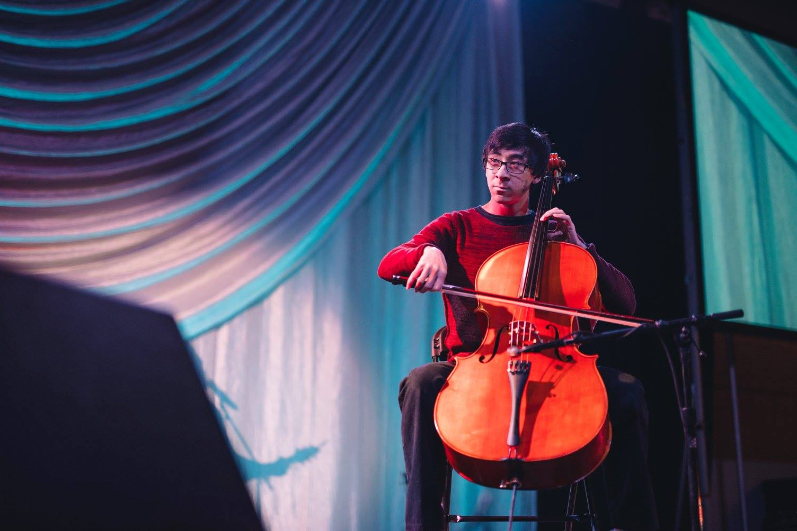
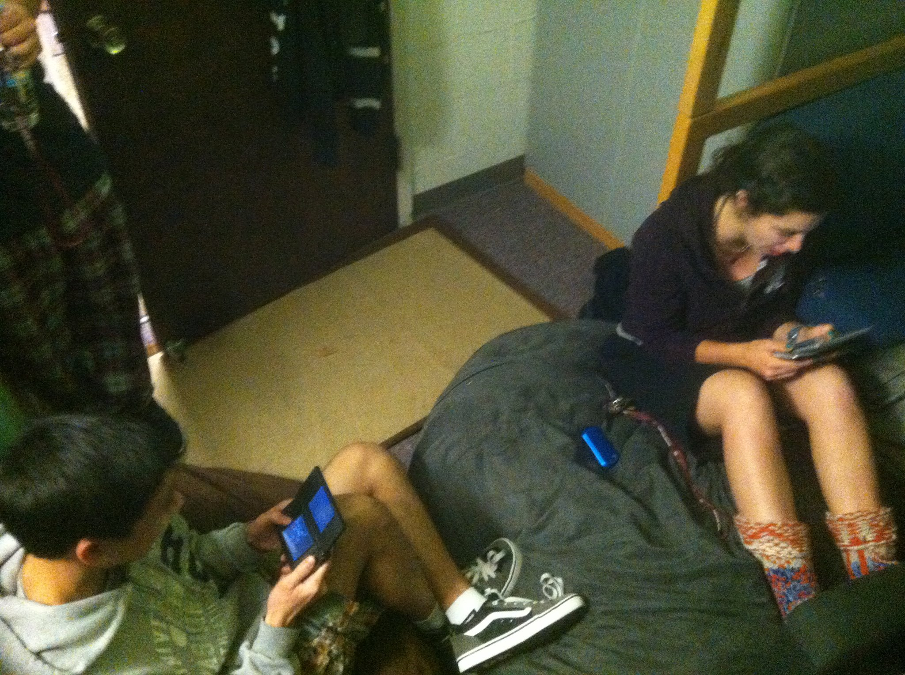
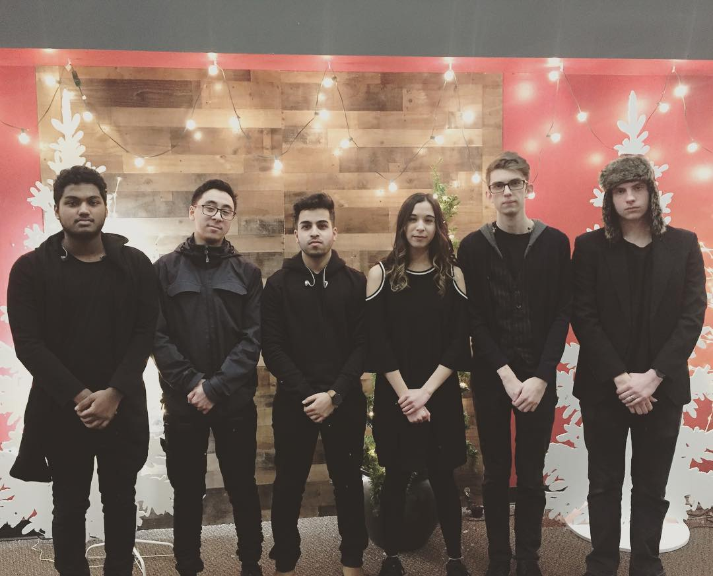

Hobbies/Interests
Music
 Music has always been an important part of my life. I love to listen to a variety of music, all of which is generally positive and uplifting. I am also a Cellist and I’ve been consistently keeping up with it since I started at age 10. There almost isn’t a time when I’m not humming a song stuck in my head, singing along to a song on the radio, or jamming with friends.
Gaming
 From the first time I played a game on the Windows 98 default games, to the first time I received my Gameboy Color, all the way to the time I saved up for a gaming laptop, video games have been with me. I can get lost in an adventure, relax in the grind for a goal I have set, or hone my skills to compete with others. I also follow E-sports and regularly watch the live streams with my friends to cheer on our favorite teams.
Relationships
 Sometimes it matters more who I am with than what I am doing. I highly prioritize strong friendships and make sure to invest in them regularly. Spending quality time, being vulnerable and having strong communication are what makes the relationships that bring the greatest joy, more than any game or song.